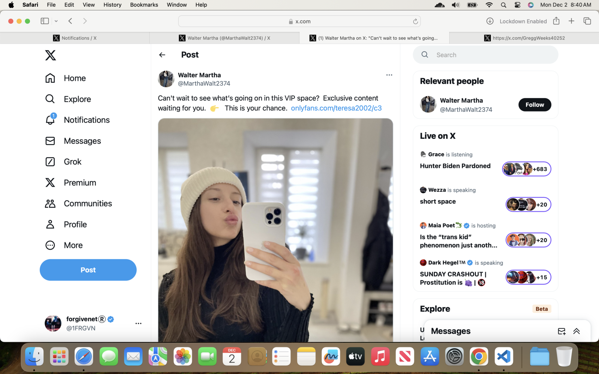
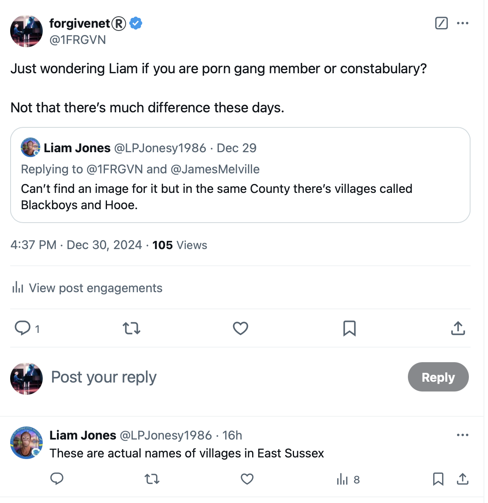
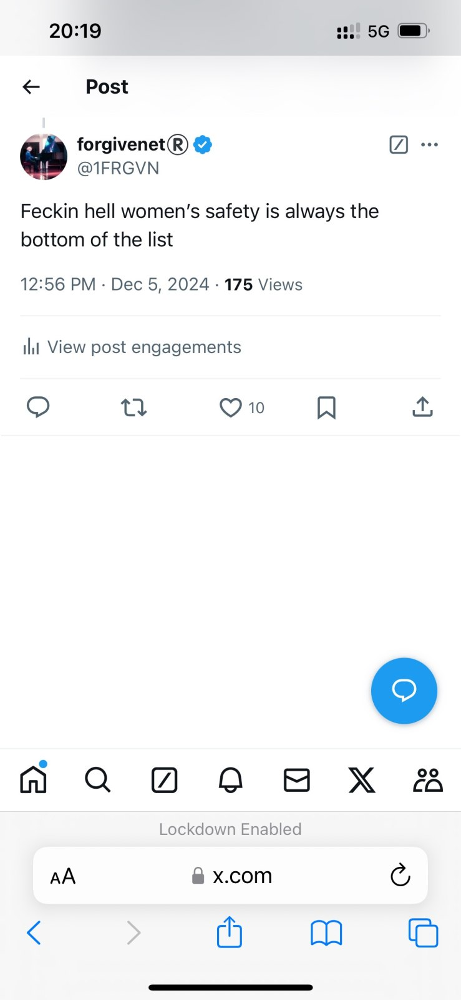

December 2024¶
Unable to access my laptop¶
- Sunday 1st December, in Bangkok, my laptop is inaccessible, just a few days after Paloma informed me via Inma that my website would be shutdown.
- The password does not work and I cannot get into the machine.
- Hackers have infiltrated my machine and changed the password.
- I’m forced to reformat my machine, again.
- They’re trying to stop me writing.
- I take the machine to a local technician in Bangkok at Terminal 21.
- When I look at X on my mobile instead, the first two likes are fake account messages taking the piss out of the fact I cannot access my machine.
- Taru Ann, the Finnish honey trap account (Hazel), likes an old post of mine.
{kind=link}

- Then two people like a post that is very suggestive of the situation.
- Zee and Luke are references to Zoe BJ and Luke BJ from Denia.

Losing significant online communications sent by the porn-gangs¶
- Due to the hack, I lose a bunch of extremely interesting screenshots taken over the month of November that I was collecting for publishing.
-
These include:
- More pictures of targeted women.
- Pictures of possums.
- A picture of a woman I saw on the Las Marinas beach in October, but she’s about twenty years younger.
- A very threatening picture of a man that reminds me of Ugly but isn’t him.
- Direct references to Domingo and Carmen Lopez Cano, poison and murder.
-
BUT MOST IMPORTANTLY: I lose a screenshot of a man I know very well; my cousin’s partner/boyfriend Chris. He seems to be in a family photo, but I thought his family was my cousin and their sons and these are people I’ve never met before. The photo is of him and what looks like his wife and grown up kids outside their house in the front garden. For over twenty years, this man has been my cousin’s official boyfriend (partner she said for a time). My cousin received a huge Lockerbie compensation payout, far bigger than mine. I often remember him being at her home whenever we had planned I would go over, but I never saw any of his personal stuff in the house. It was always like he was just visiting. Their baby was taken off them immediately. I’m glad about that. Did someone already know what was going on and that children were in peril? Her first son, born in 1999, was abused by dangerous people coming into her home. It seems highly likely the same North London porn-gang targeted other Lockerbie family members. The boyfriend may have taken half-a-million from her, more even, over the last twenty-odd years and could even have been involved in drugging and psychologically terrorizing her in EXACTLY the same way I have experienced in Spain. Her brain is scrambled. Interestingly, my cousin started to stalk me on X around the same time the gangs were panicking about me returning to my piano studies - November 2023 onwards - and she contacted me incessantly during the time I was perma-spiked-high in London. I expect she was following instructions.

-
Was this why they shut me down?
- Fortunately, I already posted some of the more obvious stalker-pics, such as the threat to my brother’s life.
Trish Penny communicates terror again¶
- Trish continues to contact me in ways that make me certain she knows what’s been happening to me and that she must think I’m an idiot.
- On the run up to the conservatory-terror while out walking with the Brits, Trish had very obviously been instructed to say and do things on behalf of the criminal gangs that were intended to upset me and cause me anxiety - just like they did at the conservatory.
- While the terror was fever-pitched, she continued to play this role.
- One good example of this was her painting of a portrait of me dressed as a clown with my double chin over-pronounced, and this was emailed to me one evening while I was at my kitchen table at the exact moment some frequency trigger was applied on my devices’ hardware, while I had just come under the effects of a recent hallucinogenic dose.
- I felt HORRENDOUS about her picture - more proof of how efficacious their emotional manipulation tech is - but it didn’t make any logical sense to me at the time so I immediately filed it away as bogus.
- Actually, I responded quickly to her email the moment she sent it, asking her about the picture to which she replied with some vague explanation.
- The picture had been on display somewhere in the region and it wasn’t the first “meaningful” painting she had informed me about on email.

- Trish sends an email around to all the expat walkers while I’m in Bangkok.
- It’s a weird message with significant dates: 7th October from a year in the 60s or 70s, a date in the 70s related to an Irish terrorist attack, and a date related to puppy love.
- The email was about What was number one on your birthday?, and in this way she was able to bring in the three weird dates.
- At the time, the puppy love trigger keeps the trumpet teacher romance lie going.
- The other dates she mentions are perhaps even more curious.
- Everyone watching me online knows how upset I was about the Palestinian invasion of Israel on October 7th 2023, and the evil that occurred that day.
- The Irish terrorist connection is very weird and I don’t understand it.
- In fact, I don’t understand any of this email outside of Trish must be trying to mess with my mind again at the behest of her husband.
- When I return to the UK in January 2026 after having painstakingly saved thousands of emails, including everything Trish sent me I’ve just mentioned, and more, someone hacks into my Google accounts and deletes everything I’ve saved, and then renders my Google account completely unreachable.
- Is it messages like this from Trish they want to hide?
- In any event, the email gets me curious about what number one was on my birthday so I look it up.
- I was rather delighted to discover it was Tie A Yellow Ribbon.
- Even though Trish’s behavior was very obviously malevolent towards me, I always felt worried about her.
- Things she said to me gave me cause for concern; for example, my much-younger-Spanish-husband always brings me tea in the morning, every morning.
- Did Trish find herself starring in horror-porn just like I did?
- Was it after she returned from her foundation art course in the UK - something she told me about on a loop - or just after her first, British husband died (or was murdered maybe)?
- Was he (were they) a spy for the salmon mousses?
- Were these messages from Trish a way for the criminal porn-gangs of Dénia to communicate with the multiple law enforcement organizations I had sent my handwritten letters to so that they might make deals while they conclude their detailed investigations and before they nick everyone and stop the baby-rapists, pedophiles, incest-obsessed, and sedated-rape insane please God.
- Were statements like the last one I just made the main reason the salmon mousses thought they could continue to bite chunks out of me and I wouldn’t notice, right up to July/August 2026 in Jerusalem when God told me EVERYTHING!?
Warning about So¶
- She did appear to warn me about So (Janet) who I was already suspicious of.
- My guess is the porn gangs are communicating with the salmon mousses this way and I have no context nor comprehension about what is going on.
- The reference to Toby is disturbing.
- The reference to Amale’s kitchen is utterly beyond me.
- Oh wait, I’m Amale (love him?) and this is confirmation that my status as a CIA intuitive spy sent into hell to report back on - or retrieve even - the stash is well-known to all?
- It’s just mind-blowing.
- Well, my lovelies, God has His own plans which involve Him alone, and His Word - nothing double-edged, no-one who does evil like it’s as normal as breathing, and no-one who thinks they’ve replaced God and do better.

- Trish always sounds severely traumatized to me; in writing, in speaking.
- What hell did she and her family go through, something she’s alluding to here? And was it at all necessary?
- My view is that without the mousse’s decades-old choke-hold on the British, it would have been totally unnecessary.
So, Janet, asks me to run an X Space about hacking¶
- So, Janet,
@ladysoluckyon X - one of my dubious UK general election volunteers - presses me repeatedly to run an X Space describing hacking. - I say I will and then find out I’m unable to get into X Spaces, inexplicably.
- After realizing she’s somehow involved with the Spanish criminal gangs, the “hunters”, I wonder who asked her to request that of me.
- No doubt someone with a direct hack into my machine via the X platform, and no doubt for porn-terror purposes.
- I have already told Janet that I’m officially unsafe in Spain.

- On my return to the UK in January 2025, I find out I’m officially unsafe in the UK too.
- I spend the entire time I live in London in 2025 with nowhere else to go in a sort of liminal stateless state.
- I’m unable to access healthcare or even go outside without a horror-porn addict recognizing me, or a criminal gang member showing up to growl at me.
- After the Metropolitan Police make it clear to me that they do not consider me a citizen with the same rights as everyone else, I realize that if anything bad were to happen to me in the UK, no-one would come to my assistance.
- You cannot imagine how stressful that realization was.
- In July 2025, I’ll find out I’m officially unsafe in France and pretty much everywhere and anywhere in the world.
- I have no option but to start a new life in a perma-liminal state; stateless essentially as anyone could do anything at all to me and no-one would assist.
- I’m unable to work as 1-in-3 Western men are horror-porn addicts, and the others have a mate who is one, and I’d be having to work with the people who masturbated over me living as a sedated sex-slave in my own home; men who expected me to be murdered, commit suicide, or just disappear and be forgotten I guess.
- I decide to devote my time to God and live on my substantial savings (the ultimate irony as these were intended to be inherited on my death by a porn-gang member through faux-marriage) until God says otherwise.
- He’s always very clear about what to do; at least He is to me with the small things He insists upon while I don’t understand anything else.
- I guess I’m really really famous aren’t I.
- It’s so gross.
- But mostly the women don’t know yet, do they.
- I wonder how many women and children are in porn-hell right now because everyone’s ashamed of themselves and hopes it’ll all go away, poof!
- Or is the world officially evil now?
- Should normal, law-abiding, tax-paying citizens start expecting to be drugged and raped by (apparently) normal, law-abiding, tax-paying citizens?
Jyotirlinga¶
- I visit India to visit two of the jyotirlinga temples.
Mahakaleshwar temple¶

- In the queue outside Shri Mahakaleshwar jyotirlinga temple in Ujjain, I meet a psychic.
- He reads my hand.
- He tells me what he sees.
- It’s astonishing how accurate he is.
- He tells me about my love, but he says there are people in the way.
- He mentions how these people are wasting my time, over and over.
- I don’t understand this.
- He talks about a small blond woman and a Muslim man waiting for me to die.
- He is very accurate with regards to Carmen Lopez Cano.
- I have no idea who the Muslim man could be; whether the psychic got something wrong, or if there is more to this story.
- The psychic tells me the form of God he worships which protect and guide him are the brother-snakes belonging to Shiva and Vishnu.
- I will revisit the Mahakaleshwar jyotirlinga as part of the 51 Shakti temples pilgrimage I am planning as there is a major Shakti peeth alongside the jyotirlinga where Sita’s upper lip is said to have fallen.
Omkareshwar temple¶
- The next day, I visit Omkareshwar jyotirlinga temple.

- While waiting on the bridge over the river, I get a strong feeling, a message even.
- I understand that, at that moment, I could give all of the hell I have been enduring away, just drop it.
- I thought about this, a lot, right there.
- I quickly came to the conclusion that if I dropped it all, it would just mean delay.
- Oh, nearly forgot, dropping it required leaving the jet stone pieces I had found on the beach in Lindisfarne at Omkareshwar.
- Sometimes, you see, I would bring them with me to Mahadev for a blessing.
- The message felt like a one off opportunity; a too-good-to-be-true from a used-car salesman.
- And I’d have to get back around to my gargantuan karma at some point in the future anyway, and no-one else was going to stand up for the innocent and vulnerable involved, so I ignored the message and carried on calmly.
Sunday 8th December 2024¶
These are my original thoughts
- This section is what I was thinking about it all back on the 8th December 2024.
- The wider picture was unclear to me at that time, but I knew enough to know that something very evil had taken over the town of Dénia.
- With just a few corrections, this is exactly what I drafted on that day, and all of it still stands.
- There is no doubt in my mind that what I have experienced at the hands of teachers and staff at the conservatory of Dénia, their friends and family, could give a person a nervous breakdown or drive them to suicide.
- Perhaps the intention was murder all along. It certainly seems so from my point of view.
- I suggest investigators check all local suicide stats and untimely deaths of anyone, particularly young people, and anyone who has a history of complaining about being terrorized or harassed in any way.
- I would also double check any women that may have been accused of being “hysterical” or similar when making gang stalking claims against Spanish public institutions such as schools or colleges, and particularly public music and dance clubs and children’s activity centres.
- I suggest that gang stalkers are prosecuted for attempted murder.
- I suggest that anyone found involved in poisoning or drugging is prosecuted for attempted murder.
- I suggest that anyone found involved in sexual grooming is prosecuted for sexual abuse and/or rape.
- I suggest that anyone found involved in the management or distribution of mass online voyeurism channels and/or non-consensual information about a private person is prosecuted most forcefully.
- I suggest that, where possible, the bodies of any suspicious deaths in the region are exhumed and analyzed for poisons, pesticides, and narcotics.
- I suggest that, all previous residents in my flat or any flat managed by anyone related to these matters, is checked up on, and the owners questioned.
- And a first point of call should be Lorraine Blackbourn’s family, and anyone that knew her, and to have a look at any police complaints she may have made prior to her untimely death by suicide.
- Furthermore, if I was an investigator, I’d make sure to check every single student that Domingo Cano Lopez the piano teacher has taught over the years to see how many of them ended up in porn or prostitution, had an early death, and/or were exploited financially in some way.
Roberto lookalike at Poolsawat¶
- I stay at the Poolsawat hotel for a few weeks before moving to the Spa Resorts to detox later in the month.
- I’m scared there.
- I feel like I’m being followed.
- I’m so worried about the German people in a neighboring room one night - one of whom looks like he could be gypsy - I go down to reception at 2am to ask hotel staff if they have security cameras on all night and for how long they keep the films.
- The woman at reception reassures me that everything is fine, and I’m grateful, but I’ve worried her too.
- I believe it’s possible the Germans might have been friends now, but at the time I wasn’t sure of anything at all and I expected to be murdered at any moment.
- In fact, the expectation that I might be murdered at any moment, anywhere I am in the world, has been ongoing since October 2024, peaking again in July 2025, and really only disappeared completely a day or two ago after reaching Part II of my seven-year long study of A Course in Miracles’ workbook lessons where I’ve been doing a lesson a week since I moved to Dénia in February 2022.
- Honestly, to have made it to Part II in one piece, and a way better piece than when I started, is a miracle of miracles!
- Every day at the Poolsawat beach restaurant a man turns up with a woman.
- He looks exactly like Roberto from Alicante, except he’s much smaller in height.
- I also wonder if these two are friendly.
- I guess I was getting everything mixed up, or not.
- It was all so stressful, and I was still being drugged, somehow.
Pedro sends a Christmas greeting¶
- Pedro, the previous caretaker from Carrer Furs, sends me a Christmas video-greeting on WhatsApp.

- (Am I paranoid to be concerned about the walnut image?)
- I take the opportunity to mention again to him that I’m offering substantial rewards for copies of any porn I’m in.
Pedro’s message
25/12/2024, 09:41 - Messages and calls are end-to-end encrypted. Only people in this chat can read, listen to, or share them. Learn more. 25/12/2024, 09:41 - PEDRO is a contact 24/12/2024, 20:14 - PEDRO: VID-20241227-WA0000.mp4 (file attached) 25/12/2024, 11:37 - det sgt lydia cleaves: Hola Pedro 19/02/2025, 17:50 - det sgt lydia cleaves: https://statement-bhw.pages.dev/ 19/02/2025, 17:52 - det sgt lydia cleaves: Recompensas aun en oferta 19/02/2025, 17:53 - det sgt lydia cleaves: Para grabaciones de mi qué Todo el mundo ha visto 19/02/2025, 17:59 - PEDRO: Hola Katerine soy Pedro el antiguo conserje de Villamar, espero que estés bien . 20/02/2025, 15:47 - det sgt lydia cleaves: Si bien aun buscando los videos de yo … pagando hasta 1000 euros para Una copia .. gracias 20/02/2025, 15:48 - PEDRO: Como puedo ayudarte 20/02/2025, 16:44 - det sgt lydia cleaves: Enviame algunas videos qué todo el mundo ha visto para justificar atacandome y te Pago sin problema 20/02/2025, 16:44 - det sgt lydia cleaves: Busco dos tipos de video 20/02/2025, 16:45 - det sgt lydia cleaves: Original cuando yo era pequenya y Tipo spycam de Dénia 20/02/2025, 16:45 - det sgt lydia cleaves: Gracias 21/02/2025, 18:11 - det sgt lydia cleaves: Email me at info@forgivenet.co.uk with anything 21/02/2025, 18:13 - PEDRO: Que es esto Katerine 21/02/2025, 18:17 - det sgt lydia cleaves: Un email para mi 21/02/2025, 18:22 - PEDRO: Hoy estuve en Villamar visitando a una familia,acabo de llegar a casa 02/03/2025, 06:39 - det sgt lydia cleaves: Is my flat the only one they put poison and drugs in the water ?? Or are there other flats too with women they are targeting?? 06/11/2025, 10:29 - det sgt lydia cleaves: https://fearandloathinginlasmarinas.com/
- He tells me he just got back from a visiting a family at the Carrer Furs apartment complex.
- I ask him if he knows about any other women being poisoned and drugged in the apartment complex.
- He does not reply.
- It’s not clear to me if hackers are deleting or scrambling my messages so that a recipient doesn’t receive them correctly.
- They were dropping poor Pedro in it, weren’t they.
Sketching the novel¶
- Disappointed that there hasn’t been a sudden rush to arrest any criminals or safeguard any children and babies, I shift gears and start thinking about my police statement in novel form.
- Perhaps I’m just a little naive about what can be done about a trillion-tentacled, spidery, murderous horror-porn enterprise, and whether if law enforcement takes its time, we get every last one of them!
- I dunno though; I do get down from time to time and it’s been a long haul (time of writing May 2026).
- In December 2024, I am visually manifesting a three-season Netflix documentary special, but I’m also seeing a true fiction series with Margot Robbie as me, and Jake Gyllenhaal as Domingo (I always had him playing the role).

- I added this section in November 2025 while I was backing up my email accounts - backups that were stolen by hackers in the UK in January 2026 - and trying to organize the thousands of snippets of saved information I had at that time.
- The notes that inspired this section come from draft scribbles written the year before.
- Here’s the MacBook note I wrote in or around December 2024:
Novel and documentary theme sketch
Novel documentary themes Summary - Traditional gang stalking of women in Spain, and how everyone knew, and from when - Modern gang stalking, mass voyeurism, close links with porn and sexual violence - Hacking and access to everyone’s networks - Cyber stalking and mobbing by the conservatory, fantastical choreographed events by teachers and staff, when it didn’t work it spread into the town, and townsfolk - Poisoning and drugging, where and when Back story - Who was involved and to what extent - Expat community - Neighbors in the building - The caretaker in the building - Teachers and staff at the conservatory - Kids at the conservatory - National misogynist networks (Madrid) - Townsfolk all - Reporting, GV, police, perito, multiple handwritten letters in desperation to everyone - Honey trapping Back story - Pedophilia, sexualization of children Back story - Damage to me personally: loss of jobs, constant stress and anxiety, racing mind, feeling intense sexual arousal, fear for my life, constant fear in Dénia, actual kidney damage from poisoning - Tecnofix Alicante Padre Marina - Finnish girl and boyfriend in the car with me January 24 breathing in whatever
Fake accounts and targets¶
- Every day, I continue to see fake accounts with targeted or significant women on them.
- One woman I see over and over has the same tattoo as the groomed-girl and the woman walking with possum-man on the Las Marinas beach.
- She looks really young and in early-groom photos she looks slim, and then in obvious later-groom stages she seems extremely anorexic.
- She reminds me of a dreadfully sinister porn-account I saw in the early days of a severely emaciated girl who was always accompanied by a brutish father who she wrote about in sexual terms.
- Those images were grainy in the same way as the content on the Taru Ann account and others.
- I see photos of her leaving someone’s bedroom at night dressed up as she is in the photos I’m posting here.
- The photographer appears to be taking her photo from a darkened bedroom and while, I assume, in bed.
- The house is modern, minimalistic, all white like some of the newer buildings in Las Rotas.
- These will be the last pics I post of women unless something extraordinarily egregious comes up.
| Fake accounts and targets |
|---|
 |
 |
 |
| I’m not sure why I’m adding the lady above but she seems suspicious. Could it be Maria Hontanilla’s mother? |
 |
| The pic above is one of a series I saw of a woman photographed without her consent while on a date. |
 |
| The woman in the pic above I believe is the innocent lady groomed into porn’s daughter. They look very alike and I have seen her in countless pics. She also looks a lot like Bruno, one of the conservatory trumpet teachers, Gloria the music-school secretary’s brother, and the same man that was waiting for me at Alicante airport arrivals on 18th June 2023. Could he be the father and therefore the groomer? |
Ongoing torment and terrorizing¶
- The stalking and harassment on Twitter is unceasing.
- There have been constant threats from Hazel and Sandra Smith.
- The following is a tiny example of what I have been dealing with online constantly since June 12th 2023.
- One profile message says, “stay away bitch” - I didn’t manage to screenshot it but it will be available on the likes from this tweet: https://x.com/1FRGVN/status/1867853572647596391 as will many others, including a bunch of messages in fake-account profiles about Toby (Trish Penny’s son) going missing.
- Are they worried that Trish’s husband is going to drop them in it too?
- They do seem to be fighting amongst themselves, and I find this encouraging.
- I send a message to mailto:[email protected], a government gender violence organization in Spain, asking for help about what I’m going to do when I come back to Spain in January.
- I explain how much danger I’m in.
- I get no help or advice from them in reply, just a message to say I can contact them for advice.
- They give me no advice at all.
- I read the reply from them and receive an immediate communication, no one cares.

- I receive messages and interactions from fake accounts with threats every day.

- Remember, Karolina is the name of the woman Mike Wenham murdered.
- One of the fake accounts I posted earlier likes one of my posts again.
- I challenge them.
- And I ask them if the “pussy” they’re referring to is mine from when I was a minor: https://x.com/1FRGVN/status/1872129900842545220.
- There is no reply.
- I challenge another dodgy account making reference to gang rape by black men.

- On December 30th, I receive interactions from fake accounts containing content related to Winston May, North London rape-gang boss.
- The first like from “Winston” is on a tweet of mine about women’s safety.
- So I go look at the profile.
- I’m just noticing other curiously significant messages on here too (time of writing May 2026).
- The first post on the profile has Winston May’s birthday, 5th December.
- The tweet the account liked is also from 5th December.

- I feel like I’m fighting a raging battle, all on my own, against thousands of perverts and their handmaidens.
- I’m unaware that a lot of what is going on is a conversation over-my-head between law enforcement and the criminals, as if innocent lives are in danger.
- It seems that many, many people would like me silenced:
- Criminal porn gangs from London.
- Criminal porn gangs from Dénia.
- Anyone supporting the above including the Generalitat de Valencia.
- Ineffective and corrupt police in the UK and Spain.
- Misogynists generally.
- Women’s groups and sexual violence organizations who have been told to ignore me.
Where’s Toby?¶
- Threatening messages related to “Toby” are repeated constantly on fake account profiles managed by Hazel Smith.
- I’m starting to recognize her language patterns with very little input.
- I realize Toby is Trish’s son by her first British husband.
- Were these threatening tweets about Toby more messages from criminals to law-enforcement that I was in the middle of?
- Later, another account flies by with the message, Trish does things.
- I have no idea what it means but I feel like my suspicions about Trish being involved malevolently in the porn-gangs grooming and stalking business were more than sound.
- The question remains if she has any choice in the matter, or whether she has been allowed the mental capacity to even understand what’s truly going on.
- Trish told me one afternoon when we were hiking that she rarely knows where Toby is.
- She told me she thinks he mostly lives in his car in the UK.
- She told me he wants to live in Japan.
- She sounded worried about him and expressed a desire to have him back in Spain, but told me that Brexit had scuppered his residency status - which doesn’t actually make sense.
- Is Toby suffering the same as me (a question posed at the time of writing, May 2026)?
- Was he so appalled by the outrageous and murderous goings-on in the region - and even perhaps what was happening to his own mother and family - that he is now stalked relentlessly by British and Spanish criminal gangs to the extent that he is stateless?
- Is Japan a country where they can’t get hold of him?
- Did Toby apply for asylum in Japan citing relentless threats and gang-stalking by the porn-gangs of Dénia?
New Year’s Eve¶
- I decided to swap over from the MacBook and use the Linux laptop again; the machine which the technician I hired to find evidence of hacking in April 2024 had reset to factory settings.
- I move my Google account over.
- I then change the password to the laptop with no Internet connection.
- After connecting the Linux laptop online again, a ridiculous Facebook post tells me they’re in already.
- They’ve have a password they shouldn’t know, as if they’re reading my mind.
- More logically, whatever hack they are using on my devices remains even when the device is cleaned by an expert!
- This is military grade hacking tech.
- An account pops up on X taking the piss.
- I already knew it but this proves again that Dénia and North London criminals have total access to my devices no matter what I do.
- I can’t understand what’s so special about me for them to have devoted so much effort into terrorizing me.
- I start feeling really overwhelmed with what has happened to me over the last three years; everything I’ve lost, the silence from law-enforcement, the constant abuse I have been suffering, never mind the poisoning and drugging.
- I tweet about it:
- Immediately, a fake account called “Sandra” pops up.
- At the time of writing, nearly 18-months later, precious little has changed and I understand the children of Dénia are still being sacrificed at the altars of porn.
- I wasn’t to know then that the constant drugging and poisoning was very much set to continue as soon as I arrived back in the UK.
The harmony teacher Alfonso pops up on Google search¶
- I do a search with
@jctot19 X. - The usual pics come up.
- One that I have noticed over the last months, but it didn’t register until today, is a very scared looking man who looks exactly like Alfonso who taught harmony class from September 2023 at the conservatory.
- He, alone, expressed alarm when I told everyone I had to leave my conservatory studies in March 2024 because my life had been threatened.

- The hackers on Twitter referred to him as a “brat”.
- Did Alfonso complain about what was going on, without realizing the fuller monstrous scale of the problem at the conservatory of Dénia.
Lucyfer Adams¶
- A yappy stalker account flies by a lot over the month.
- The account name is “Lucyfer Adams”.
- I note it as significant without knowing why.
- When I meet Paul - tasked with distracting me, topping me up, persuading me to travel to more illicit-porn filming locations, and God knows what else - in early January he will tell me about his best mate Lucy.
- Lucy is clearly a criminal gang member and I will bump into her a couple of times over the next few months in dubious circumstances.
- Is she the Adams, Adams?
- Are they offering her up too?
- Or is she safe and sound with the best of North London’s finest?
- Am I about to find myself in even more danger when I move back to London?
A curious new intuitive skill¶
- I’m not yet fully aware that my online conversations with criminal gangs have been generating a lot of interest inside international law-enforcement organizations - although I’m sensing something’s changed on the social-media hack I’ve been navigating for years.
- My handwritten letters - particularly the supplementary page - obviously had an impact.
- Every time I go online, I’m interacting directly with known criminals like Hazel Smith, the Dénia porn-gangs, and other British and Spanish criminals.
- The thing is, the ability to do this alone and without help on a social media space like X is somewhat unique; a new and rather interesting skill.
- I expect my newly-discovered gift is mostly to do with language pattern-recognition abilities, finely-tuned by years of spiked-hallucinogen intake.
- An important note here is that I believe the efficacy of these skills relies entirely on Principle of Miracles no. 7 from A Course in Miracles - Miracles are everyone’s right, but purification is necessary first. - being somewhat in place, and without that pre-requisite years of unfettered hallucinogen intake could have severe and devastating effects to the mind and is no doubt what the criminals expected to happen to me from their own plentiful historical data.
- The criminals really shot themselves in their wee feetsies with me now though, didn’t they.
- Oh my, I was just a little bit wrong about this!!
Detoxing in Samui, an unusual poo¶
In the spirit of purification¶
- It is day 5 or 6 of the fast and cleanse.
- I go, as usual, to pick up my last detox drink at 7 o’clock.
- As I’m downing the wallpaper paste, I feel a strange rumbling in my belly, and a cramp beginning.
- I need the toilet!
- This is peculiar because I haven’t eaten anything for 6 days and I have been doing colonics daily.
- Well.
- I am on the toilet for about 2 hours.
- There are at least three separate sittings as I think I’ve finished, get off, and then have to rush back quickly.
- It’s as if the whole nasty Dénia business, every second of it, is being released into the toilet bowl.
- I feel like I’ve been holding onto some serious poison for a long time, and here it is disappearing, down the toilet.
- On the last go, as I said about two hours after I started, I pretty much felt that that was it and I could get going to my massage after I flush the toilet and wash my hands.
- I looked into the toilet bowl.
- The poo had formed into an X.
- Yes, an X.
- An not just any X, the Twitter X itself!
- It was a wow moment for me, I must say.
- I wondered what it could mean? It was very specific, very clear.
- Was it an Instruction?
- Is X going down the toilet?
- I thought a lot about that poo, and never came up with anything particularly solid (no pun intended).
- I may have tweeted about Mary owning X due to it.
- I had no idea about squirrel’s diamond nut at the time.
- (My apologies for this section if it was a bit gross.)
Agents all over me¶
Two women dressed to remind me of Lauren Ott’s profile pic¶
- Her private number mobile profile pic with her and her mate out clubbing, dressed up to the nines.
- There they were, a couple of rooms away, or bumping into me on the stairs.
Desa’s mate from Pinder in Scarborough¶
- A large, fattish, dark-haired man around her age, maybe a little younger, that apparently worked with her at Pinder.
- He was at their wedding, as I remember, and he came out one night briefly when I went to Scarborough with them all in August 2019 for the weekend.
- Desa had been a proof reader at a printing firm called Pindar in Scarborough, she had told everyone, and that’s where they had met - her very good friend, she was tearful about him.
- I find the word Pindar interesting; especially the definition of its similarly sounding Yorkshire term pinder.
- He has long dark curly hair, sort of geeky looking, a big man.
- He’s in one of the next rooms.
- I will see him again and again over the next 18 months.
- I always thought he was familiar.
- I wonder if he believed I’d never remember him due to brain-damage?
- This guy, now, was he also the same man who said he was an “opera singer” who was at Anita and Matthew Diamond’s house with his wife (the statistician) that time they mentioned the “petrol money”?
- I see him again in Cauterets in May 2026.
My Belgian friend says he will help me¶
- I’m posting snippets from this police statement every day online, particularly on my Facebook account.
- The information I’m sharing is horrific.
- I’m basically asking for help, screaming for it, by writing this police statement.
- Except, no-one seems to care.
- So I keep writing, until someone does.
- All I have is my words and there’s no other option but to use them.
- One of my friends, who I had visited in Brussels back in July while I was at EthCC, and who I had told at that time what was going on for me - as far as I knew it - tells me he’s coming to help me go to the police in Madrid in the first week of January, and help me move my stuff back to London from Denia.
- I’m so relieved.
- Finally, a friend will help me!
- He’s very very concerned, it seems.
- It’s such a relief, you cannot imagine.
- Then he ghosts me, for days.
- Eventually after I ask him what’s happening, quietly and with no apology or explanation, he says he can’t do it because he has to take his kids to school.
- Did someone reach out and tell him to back off?
- Does he have a porn-subscription too?
- At the time it didn’t occur to me but there were some unusual events around Nicos.
- Nicos “popped up” in 2011 in East Finchley out of the blue when I was back home suffering with colitis.
- He turned up at 31 Trinity, randomly, to invite us to a gig in Brussels which his band was playing, and I went along.
- He spoke to my dad at length that afternoon; my brother and mother were in bed and weren’t emerging that day.
- Robert, post-losing-his-mind-in-Thailand earlier that year, and whatever the gangs had done to extract his money from him, never really recovered fully and my mother failed to recover along with him…
- At the gig in Brussels (I think in November 2011), I remember his musician friends saying, specifically, how Valencia was full of excellent horn players.
- It could be nothing, but then I remember that in July at EthCC, Nicos plays me a song he has written about how he was violated by a woman sexually when he was 16.
- She was, as he put it, a bit rough with him.
- I’m sitting there wondering if he’s taking the piss out of me, and then decide the hatred-levels required for something like that are just too preposterous.
- Perhaps he was.
- I guess we’ll find out.
- At the time, I find this ability to ask for help quite powerful - I don’t usually, cos no-one does.
- I decide instead I’ll ask Paul if he will accompany me to the Madrid police to make a further statement about attempted murder by poison in October 2024, and to help me move my stuff back to London from Spain.
- I haven’t seen Paul since 2001 - when he, Niall, and Simon visited me and, my boyfriend at the time, Brian at our flat in Hastings one night.
- I have no idea Paul is on the North London porn-gang payroll as well.
Richard Freed¶
- I contact Richard Freed on WhatsApp.
- He’s unblocked me and replies - he blocked me in April when I tried to reach out to him to ask for help - probably after being stonewalled at the Foreign Office because I knew he worked there.
- The first thing he says on WhatsApp is “Good God”, and it sounds like an expression that is referring to what’s happening.
- We have a long chat which I didn’t keep.
- He tells me he’s in Bali.
- It’s really nice to speak to someone normal that knows me, but he’s not telling me anything I need to know, and I get the feeling he does know what’s going on, and it’s all hush hush, so I leave it there.
- I’m thinking, if the criminal gangs know I have a friend in the Foreign Office they might decide to leave me alone.
- I don’t hear from him again.
A shift in the game¶
- The terror continues and I remain stressed and anxious.
- As has been the case since June 2023, I’m surrounded by people wherever I am in the world who very obviously, to me, have no good intention towards me.
- However, something has changed this month, and as well as the crowds of wrong’uns that seem to be terribly interested in me, I start to notice good folk amongst them, who are also interested in me.
- Something big has changed, but I cannot say for sure what it is because I can only feel the energy of it in the people I see and interact with.
- I suspect it must be to do with my handwritten letters.
- God, I believe, is also sending folk to help me out when I really need someone.
- One example of this is when I got on the Bangkok Airways plan in Samui, I was so stressed with everything that had been going on, I was sort of collapsing under the weight of the intensity of an international criminal enterprise having 24-7 access to me, and watching everything I do.
- I sat next to an Indian couple on the plane.
- They were from Gujarat.
- We got talking and quickly the subject changed to the Ramayana and Hindu stories.
- My whole nervous system came down from high intensity to a relaxed stillness, and I have to thank God for that.
- Whoever you were - woman and man with the name that only you have in the whole world - thank you <3.
- Oh, and I did visit, just like I promised.